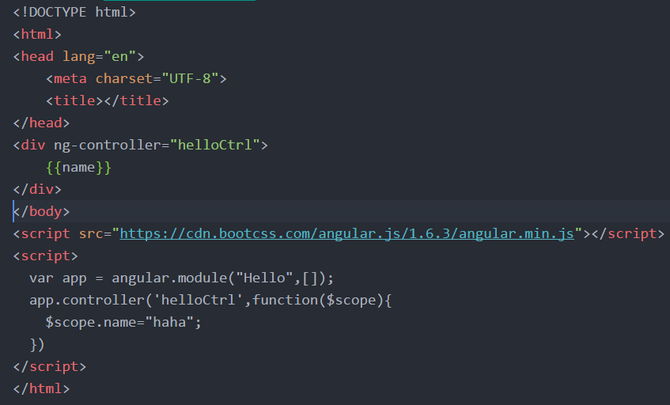
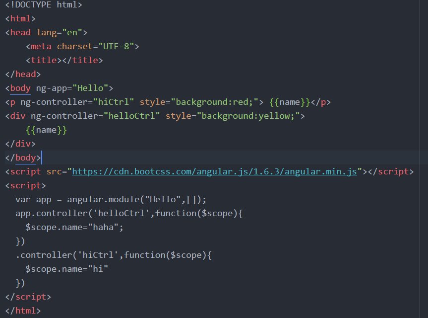

分享人：张珺琢
目录
1.背景介绍
2.知识剖析
3.常见问题
4.解决方案
5.编码实战
6.扩展思考
7.参考文献
8.更多讨论
一、什么是controller
AngularJS 控制器是常规的 JavaScript 对象,由标准的JavaScript对象的构造函数创建。
AngularJS 控制器 控制 AngularJS 应用程序的数据。
简单的说：
在angularJS中，controller是一个javascript函数，用于操作作用域中，各个对象的初始状态以及相应的行为。
一.angular controller初始化对象状态
在控制器中初始化name属性的值，值为haha 初始化
二、controller的作用域
也就是说，在HTML中，绑定ng-controller的那个DOM节点内的所有子标签，将会是当前controller的作用域。
在大型项目中,如果HTML DOM 中有多个作用域，这时你就需要知道你使用的 scope 对应的作用域是哪一个。
三、多controller的实现
根据上面的例子，我们知道，angularJS中view层解析是通过controller的作用域来将$scope对象解析成相应的内容，因此我们可以在同一个界面上划分不同的模块，通过不同的控制器控制不同的模块来进行开发，这样通过划分模块的开发方式，对今后维护代码带来了便利。
我们会发现，不同的controller他们scope对象是不一样的,即使都是用了name这个变量，可以看出controller之间是封闭的，可是有时候我们面对两个模块之间进行数据交互，必然在两个controller之间进行通信，这就涉及到angular中的service操作
controller之间的数据该如何传输？
使用service,实现controller之间的数据传输
在之前的例子我们提到，controller是相对独立的，两个controller之间，内存是不共享的，同级DOM下，两个controller是无法互相访问其中的属性或者方法的。
官方建议页面之间通过service互相访问。
问题1.在controller中嵌套controller会出现什么样的问题？
首先，我将原来页面中的body标签上绑定了一个名为rootController的一个控制器，命名了2个变量，并将其余两个控制器中的同名变量删除。如下图
由此可见，controller的作用域跟js作用域相似。
注意：在大型项目中，为了代码规范，很少会使用这种方法，同时这种行为很危险！
如何使用angular中的Service服务在多个controller之间的进行数据传输？
service的作用就是用于数据共享，将同一个service中的内容分给不同的controller
以上只是简单的使用了service，在Angular中Controller通信的方式有三种，上述提到的为注入服务的方法，另外还有作用域继承和基于事件的方法。
作用域继承。利用子 Controller 控制父 Controller 上的数据,仅限于上下级之间的通信。
基于事件。利用 Angular 的事件机制，使用 $on、$emit 和 $boardcast
参考参考一：博客园
参考一：菜鸟教程
感谢大家观看
BY :张珺琢